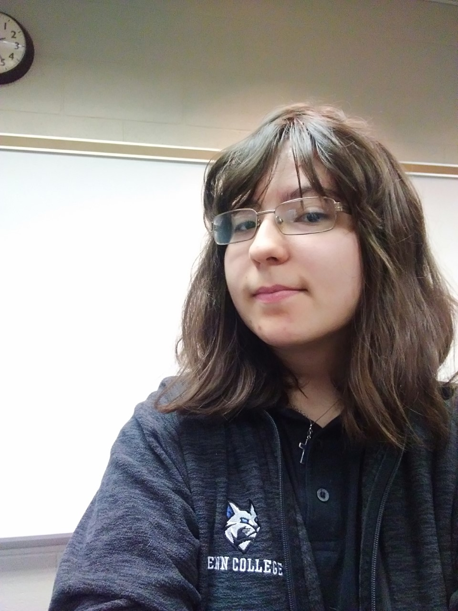

Welcome to my portfolio. I hold two degrees: a Bachelor's degree in Software Development and a Master's degree in Creative Writing. I illustrate and design visual art, from book covers to various art pieces that are illustrated with Paint Tool SAI. This portfolio is made to display my skills: programming, art, and writing.

For my first degree, my bachelor's in Software Development, I have a computer science background. This webpage was coded by me, as a matter of fact, with HTML from Notepad++ on my desktop that transitioned into development on GitHub (Note: if you wish to view the code files and development on GitHub, view the "Source Code" tab in the navbar).
This programming interest started in high school, where I tinkered with Python to make a visual novel-esque game about cats. I also started making basic websites with services such as WebStarts and Weebly to make my own private websites for fun, growing an interest in learning the process behind making that.
When I started my bachelor's program at Pennsylvania College of Technology, they taught me, with hands-on learning, how to program basic applications with Java, my first being a temperature converter from Fahrenheit to Celsius. This went from Java to webpage development with HTMl and CSS styling. I also tinkered a little bit with SQL, though primarily my work was in Java, Python, and HTML/CSS.
Programming isn't my only professional interest. I also greatly enjoy written and visual art, making anything from digital illustrations to custom art plushes. More details on this are under the "Writing" and "Art Gallery" pages.
• Likely unsurprising coming from a programmer, but I LOVE video games! I love The Legend of Zelda, Pokemon, Stray, and so much more!
• Equally unsurprising, I love reading books. I love the Wings of Fire series by Tui T. Sutherland and many others.
• I have a great love of animals, having my own pet cat and having been attached to some family dogs in the past as well. I also love several birds, horses, geckos, and ball pythons.